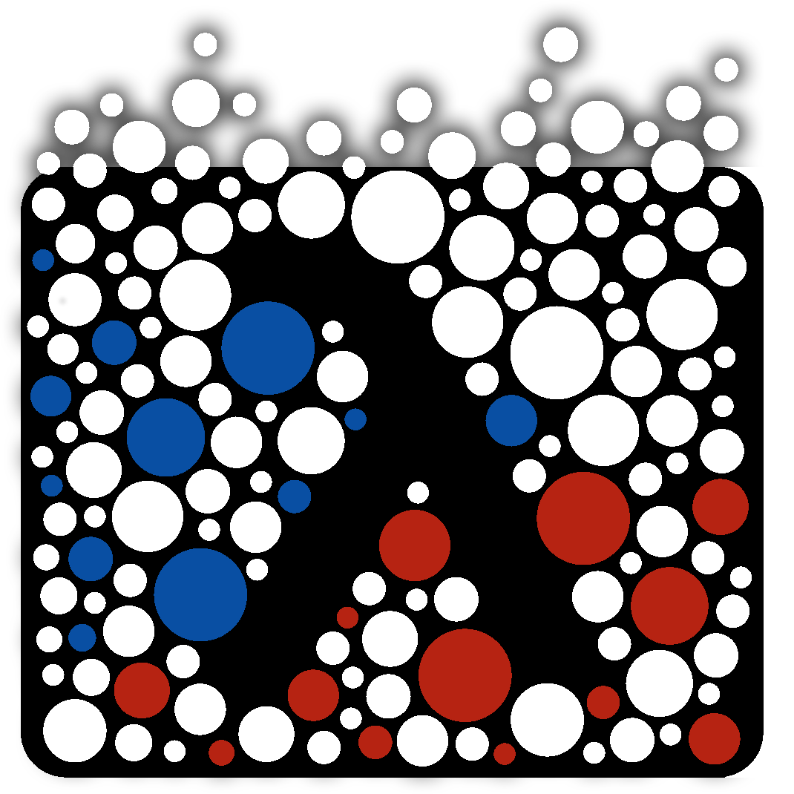

Konrad Siek

I did my doctoral work in the fields of concurrency and distributed systems, especially transactional memory, which was the topic of my dissertation.
I am currently interested in programming language runtimes. My current work revolves around the internals of the R language and implementing larger-than-memory runtime objects.
I am also helping to develop a CodeDJ system for using large software repositories for quantitative software engineering research (like GitHub).
I like hamsters and bamboo swords and I seek difficult ways to solve simple problems.
Research (some of it)
 Petr Maj, Konrad Siek, Alexander Kovalenko, Jan Vitek.
Petr Maj, Konrad Siek, Alexander Kovalenko, Jan Vitek.
CodeDJ: Reproducible Queries over Large-Scale Software Repositories.
ECOOP’21. [LIPIcs]
Abstract: CodeDJ is an infrastructure for querying repositories. It consists of a persistent datastore, constantly updated with data acquired from GitHub, and an in-memory database with a Rust query interface. CodeDJ supports reproducibility, historical queries are answered deterministically using past states of the datastore. This allows researchers to reproduce published results.
Konrad Siek and Colette Kerr.
Userfault objects: transparent programmable memory.
ICOOOLPS’21. [Arxiv]
Abstract: We implement a framework that employs the Linux kernel’s userfault mechanism to fill the contents of runtime objects on demand. When an object’s memory is accessed the framework executes a user-defined function that generates a slice of the object. The back-end can generate data from thin air, calculate it from a formula, or retrieve it from persistent storage, the network, or other sources (with or without post-processing). UFOs follow the memory layout of standard runtime objects, so they can be introspected and written to safely.
 Konrad Siek, Paweł T. Wojciechowski.
Konrad Siek, Paweł T. Wojciechowski.
Last-use Opacity: A Strong Safety Property for Transactional Memory with Prerelease Support.
Distributed Computing (to appear).
Abstract: Transactional memory requires strong safety guarantees. Database properties like serializability are not enough. On the other hand TM properties like Opacity are too strict, because they preclude reading from all live transactions. We propose a safety property called last-use opacity that relaxes opacity to allow reading values written by live transactions if the releasing transaction will not subsequently overwrite the value.
Konrad Siek (advisor: Paweł T. Wojciechowski).
Distributed Pessimistic Transactional Memory: Algorithms and Properties (doctoral dissertation).
Faculty of Computing Science at Poznań University of Technology. Defended January 2017. [PDF]
Abstract: We use pessimistic DTM to make transactions with irrevocable side effects safe. We use early release to make pessimistic DTM outperform state-of-the-art optimistic DTM. We also introduce a safety property called last-use opacity that allows early release but gives strong guarantees.
Paweł Kobyliński, Konrad Siek, Jan Baranowski, Paweł T. Wojciechowski.
Helenos: A Realistic Benchmark for Distributed Transactional Memory.
Journal of Software: Practice and Experience. volume 48, issue 3. March 2018. Wiley]
Abstract: We introduce a parameterizable benchmark for distributed TM based on the Facebook inbox application described in the Cassandra paper (Lakshman, Malik 2010). We show an example evaluation of HyFlow2 and Atomic RMI.
Positions
 Post-doc research assistant (from 2017)
PRL-PRG at Czech Technical University in Prague

 Post-doc research assistant/instructor (2017)
Post-doc research assistant/instructor (2017)
PRL at Northeastern
 Research assistant (until 2016)
Research assistant (until 2016)
DSG at Poznań University of Technology